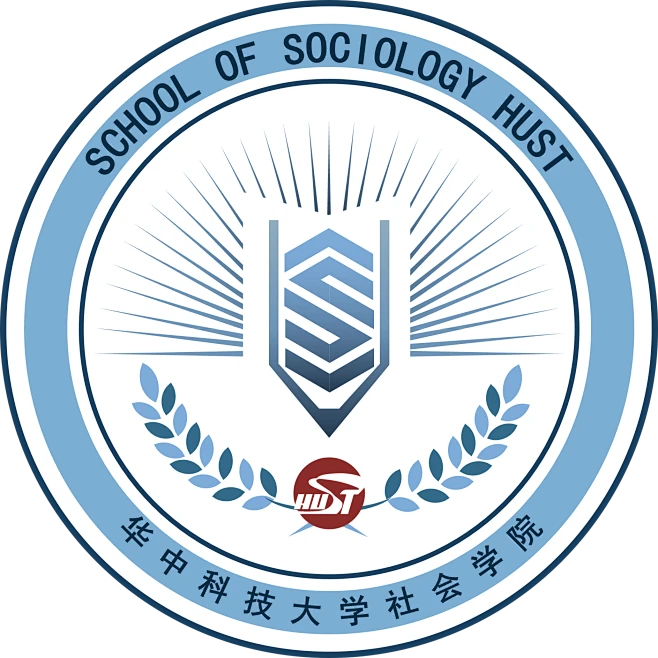

求是
不满足于口号，用证据、方法和对话接近真相。

华中科技大学社会学院 2602 班School of Sociology · HUST
26级02班——一群认真理解世界的年轻人。
2602 · 概况
华中科技大学社会学院 2602 班，全称为 2026 级社会学专业 02 班。班级扎根喻家山，以田野与课堂为两翼，培养看见人、理解结构、走进现场的青年学子。
2602 · 班级
我们来自五湖四海，却共同选择了社会学。课堂上讨论制度与变迁，课余走进社区、工厂、乡村与城市街头，把理论落到可感的生活里。
2602 · 班风
不满足于口号，用证据、方法和对话接近真相。
先听见人的故事，再讨论结构、政策与变迁。
学习可以竞争，成长必须结伴。
社会学的想象力，是把个人困扰接上公共议题。2602 班愿意从喻园开始练习这件事。
2602 · 生活
经典与当代并读：韦伯、涂尔干、费孝通，也读当下中国的城市、家庭与劳动议题。
从武汉街头到家乡社区，练习观察、访谈与记录，把问卷之外的世界带回来。
生日、晚自习、运动会、志愿活动。热闹时一起热闹，安静时彼此留灯。
升学、公职、研究、公益与媒体——路径不同，都从把社会看清楚开始。
2602 · 人物
2602 · 留言